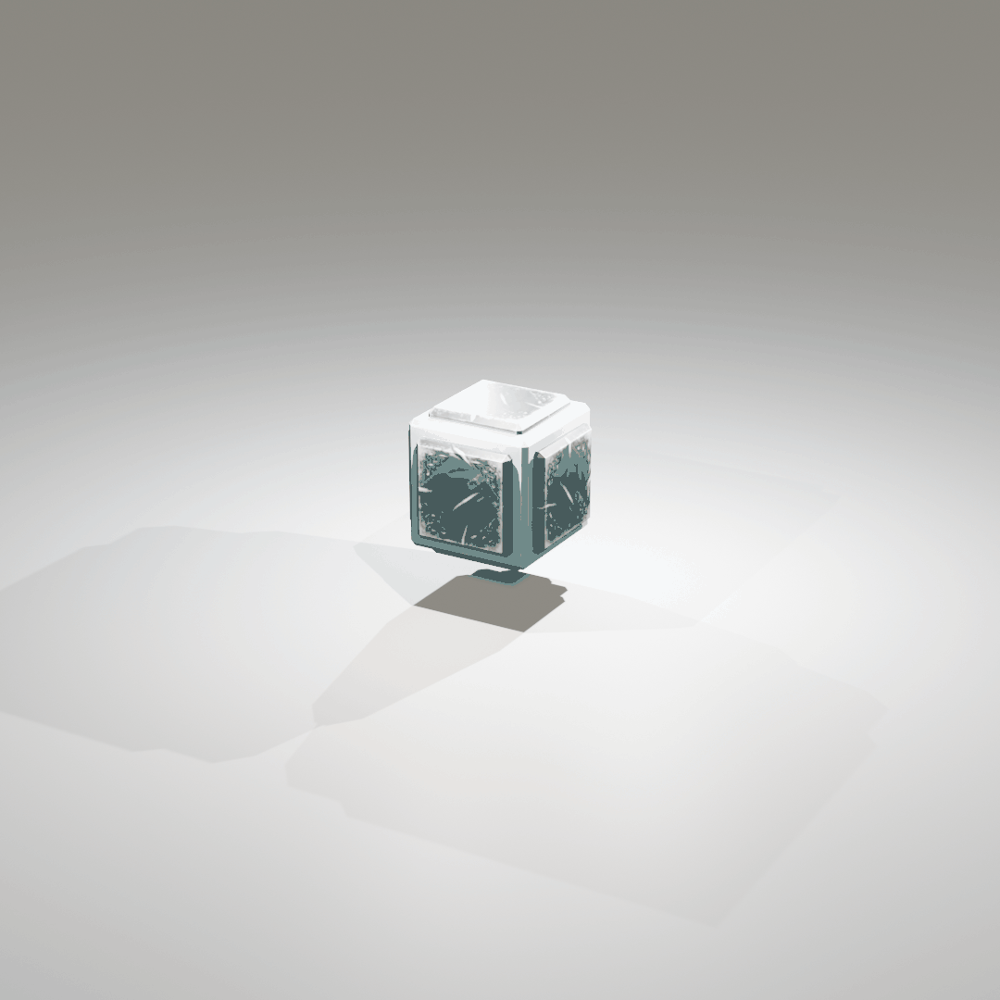
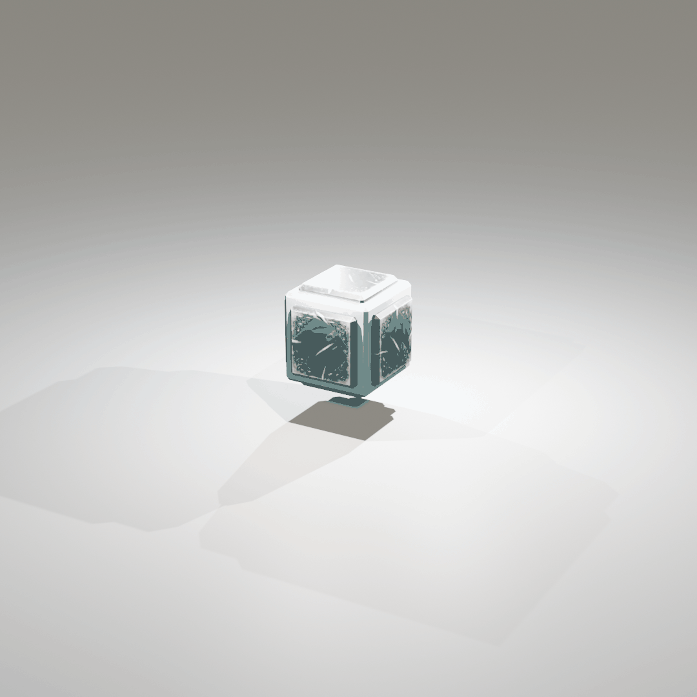

Agentic Engineering Construction Automation Arena
 Grok
Grok


 Claude
Claude


 Doubao
Doubao


 Kimi
Kimi


 DeepSeek
DeepSeek


 



Bridge Construction

Vehicle Construction

Rocket Construction
Engineering construction automation aims to transform natural language specifications into physically viable structures, requiring complex integrated reasoning under strict physical constraints. While modern LLMs possess broad knowledge and strong reasoning capabilities that make them promising candidates for this domain, their construction competencies remain largely unevaluated.
Question: How can we comprehensively evaluate LLMs for language-driven and physics-grounded construction automation?
Here, we introduce Build Arena, the first physics-aligned interactive benchmark designed for language-driven engineering construction.
| Benchmark | Spatial Reasoning | 3D Construction | Construction Planning | Physical Simulator | Interactive Environment |
|---|---|---|---|---|---|
| PlanBench[1] | ✗ | ✗ | ✗ | ✗ | ✗ |
| PlanQA[2] | ✓ | ✗ | ✗ | ✗ | ✗ |
| PHYRE[3] | ✓ | ✗ | ✗ | ✓ | ✓ |
| VOYAGER[4] | ✓ | ✗ | ✓ | ✓ | ✓ |
| Embodied Agent Interface[5] | ✓ | ✓ | ✗ | ✓ | ✓ |
| Build Arena (ours) | ✓ | ✓ | ✓ | ✓ | ✓ |
What Sets Build Arena Apart?
Build Arena is the first benchmark that comprehensively addresses spatial reasoning, 3D construction, construction-aimed planning, physical simulation, and interactive environments in a unified framework.
Benchmark Framework
Build Arena establishes a comprehensive evaluation framework with four core components:
1. Language-Driven and Physics-Grounded Construction
We develop an open-source 3D Spatial Geometric Computation Library that mirrors Besiege's construction logic and physical constraints. This library enables LLMs to interact with the construction space through natural language interfaces, ensuring consistency between language-based actions and physics-aligned outcomes.
Construction is inherently iterative: structures are assembled step by step, each component must connect to existing ones, and physical feasibility (e.g., collision avoidance) is continuously verified. Actions fall into four categories: Build, Refine, Query, and Control.
2. Agentic Workflow (Baseline & Customizable)
Inspired by human engineering practices, we design a baseline workflow that follows a coarse-to-fine structure with multi-party collaboration. It employs five specialized entities working together:
The baseline workflow progresses through three stages: Plan Phase → Draft-Review Loop → Build-Guidance Loop, producing a simulation-compatible construction result. Our framework supports flexible workflow customization: you can define your own agent collaboration patterns, modify the multi-stage structure, or integrate alternative reasoning strategies to suit specific task requirements.
3. Simulation-Based Evaluation
Construction results are evaluated in the Besiege physics simulator with task-specific protocols. For each task-LLM pair, we sample 64 times to ensure reliability. Evaluation metrics cover both performance (number of parts, success rate, task-specific indicators) and cost (input/output tokens, number of requests).
4. Task Suite (Base & Customizable)
Build Arena includes three representative engineering task categories, each with three difficulty levels (Easy, Medium, Hard). Tasks are designed along six difficulty dimensions: Quantification, Robustness, Magnitude, Compositionality, Precision, and Ambiguity. Click the ⚙️ Yours card below to learn about customizing your own tasks.
üöó Transport
Construct mechanical structures capable of directional movement on a planar surface. Tests the ability to exploit spatial movement afforded by building components. As difficulty increases, explicit instructions are removed and cargo loads are added.
üåâ Support
Build static structures to support loads across gaps—essentially designing bridges. The span multiplies across difficulty levels, requiring larger-scale structures and more precise assembly. Modular construction with multiple substructures is required at higher levels.
üöÄ Lift
Construct rockets capable of vertical movement. Lv.1 requires building a single rocket engine (TWR > 1). Lv.2 requires an integrated rocket-powered aircraft. Lv.3 demands modular construction of separate substructures (engine + frame) and their assembly.
⚙️ Yours
Build Arena provides a flexible framework that allows you to define your own engineering construction tasks. You can customize task descriptions, evaluation metrics, and physical constraints to suit your specific research needs or application scenarios.
Performance Leaderboard
| Model (Full Name) | Transport Avg Success Rate |
Support Avg Success Rate |
Lift Avg Success Rate |
Overall Performance |
|---|---|---|---|---|
| Grok-4 grok4-0709 |
11.5% | 20.8% | 21.9% | ü•á Excellent |
| Claude-4 claude-sonnet-4-20250514 |
12.5% | 3.1% | 4.2% | ü•à Good |
| Seed-1.6 doubao-seed-1-6-250615 |
6.2% | 19.3% | 2.1% | ü•â Good |
| GPT-4o gpt-4o |
6.2% | 13.5% | 3.6% | Moderate |
| Kimi-K2 kimi-k2-turbo-preview |
4.7% | 11.5% | 5.2% | Moderate |
| Qwen-3 qwen-plus (Qwen3 series) |
5.7% | 5.7% | 1.0% | Moderate |
| DeepSeek-3.1 deepseek-chat (DeepSeek-V3.1) |
2.6% | 8.3% | 3.6% | Moderate |
| Gemini-2.0 gemini-2.0-flash |
1.6% | 7.8% | 0.0% | Moderate |
Success rates are averaged across all three difficulty levels (Lv.1, Lv.2, Lv.3) for each task category under our baseline agentic workflow. Full model snapshots and detailed experimental setup are available in the paper appendix.
We evaluate eight frontier large language models on Build Arena across three task categories (Transport, Support, Lift) and three difficulty levels (Lv.1 Easy, Lv.2 Medium, Lv.3 Hard) under our baseline agentic workflow. Performance is measured by success rate, with 64 samples per task-model pair to ensure statistical reliability.
Key Findings
LLMs Can Perform Language-Driven 3D Construction
Eight frontier LLMs successfully completed construction tasks across multiple difficulty levels, demonstrating that language models can translate natural language into physically viable 3D structures.
Performance Varies Significantly Across Models
Grok-4 shows the strongest overall performance, particularly excelling in Precision and Robustness. Most models handle Magnitude and Ambiguity well but struggle with Compositionality and Precision.
LLMs Exhibit Creative Problem-Solving
When explicit constraints are relaxed, LLMs propose unconventional solutions such as propulsion-powered carriers for transport tasks and wheel-integrated bridge structures that utilize automatic braking for stabilization.
Real-World Engineering Knowledge Is Captured
LLMs construct structures mirroring real-world practices, such as steel trusses in bridges and differential steering in vehicles, suggesting that structural concepts learned from text carry implicit spatial information.
Significant Limitations Remain
Success rates drop sharply in hierarchical assembly tasks (Support Lv.3) and high-precision tasks (Lift). Most models except Grok-4 fail completely at the hardest difficulty levels, indicating challenges with compositional construction and precise spatial alignment.
More Tokens ≠ Better Performance
Cost analysis reveals that massive inference does not guarantee high performance. Best construction results often consume only moderate numbers of tokens, while many failed attempts incur massive token usage. Beyond a capability threshold, additional inference cost does not translate into better results.
Acknowledgments
We are grateful to Spiderling Studios for creating Besiege, the inspiring physics sandbox that underpins our work. We also thank the developers of the open-source projects Lua Scripting Mod and Besiege Creation Import Addon for Blender for their valuable contributions to the community.
We also gratefully acknowledge the support of Westlake University Research Center for Industries of the Future. The content is solely the responsibility of the authors and does not necessarily represent the official views of the funding entities.
References
[1] Karthik Valmeekam, Matthew Marquez, Alberto Olmo, Sarath Sreedharan, and Subbarao Kambhampati. PlanBench: An Extensible Benchmark for Evaluating Large Language Models on Planning and Reasoning about Change. In Thirty-seventh Conference on Neural Information Processing Systems Datasets and Benchmarks Track, 2023.
[2] Fedor Rodionov, Abdelrahman Eldesokey, Michael Birsak, John Femiani, Bernard Ghanem, and Peter Wonka. PlanQA: A Benchmark for Spatial Reasoning in LLMs using Structured Representations. arXiv preprint arXiv:2507.07644, 2025.
[3] Anton Bakhtin, Laurens van der Maaten, Justin Johnson, Laura Gustafson, and Ross Girshick. Phyre: A new benchmark for physical reasoning. Advances in Neural Information Processing Systems, 32, 2019.
[4] Guanzhi Wang, Yuqi Xie, Yunfan Jiang, Ajay Mandlekar, Chaowei Xiao, Yuke Zhu, Linxi Fan, and Anima Anandkumar. Voyager: An open-ended embodied agent with large language models. arXiv preprint arXiv:2305.16291, 2023.
[5] Manling Li, Shiyu Zhao, Qineng Wang, Kangrui Wang, Yu Zhou, Sanjana Srivastava, Cem Gokmen, Tony Lee, Erran Li, Ruohan Zhang, et al. Embodied agent interface: Benchmarking llms for embodied decision making. Advances in Neural Information Processing Systems, 37:100428–100534, 2024.